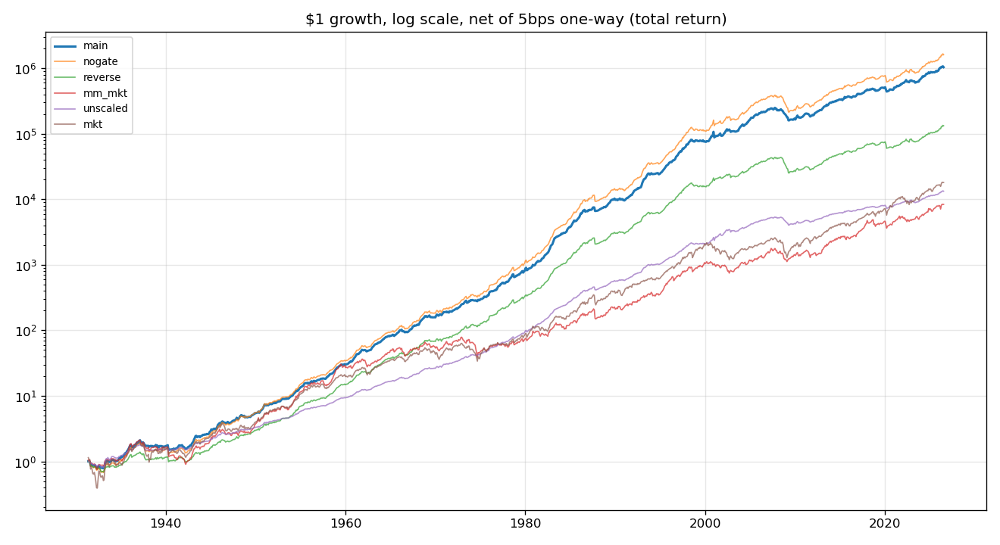
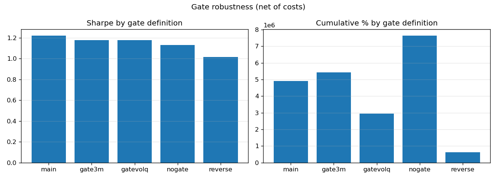
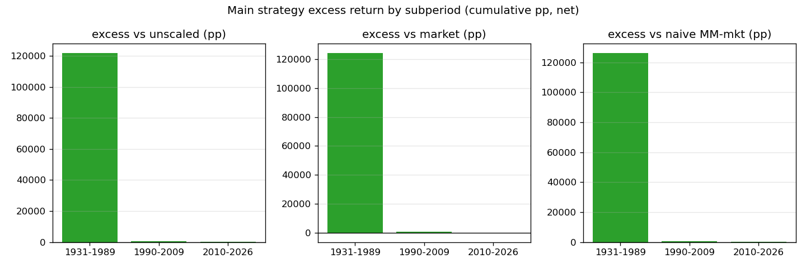

条件式多因子波动率管理
点子马拉松四个 win 之一，Sharpe 1.219——全场最高，最接近 1.3 的一个 · 自研策略，无直接文献；波动率缩放（Moreira-Muir 思想）+ 自研条件门
策略是什么
自己想的。点子库 id r2-conditional-volmanage，
第五轮马拉松 103 个点子中 4 个 win 之一。核心思想分两步，全部在测试前预设：
- 因子池：MKT-RF（市场）+ HML（价值）+ UMD（动量）+ BAB（betting-against-beta），四条腿等权，月频。
- 第 1 步 — Moreira-Muir 逆波动率缩放：每月末用过去 6 个月组合已实现波动率定下月权重， 目标年化波动 12%，权重上限 2.0x（可实施性选择，如实披露）。
- 第 2 步 — 条件门（自研核心）：若组合过去 1 个月收益 > 0 → 全额缩放权重； 若 ≤ 0（下跌即高波动的廉价代理）→ 权重减半（0.5x）。
- 月调仓；单边 5bps 按实际换手逐月扣除；无未来函数：每月末信息只决定次月权重。
为什么这样设计
波动率聚集是市场的物理规律，不是行为故事：高波动之后往往还是高波动。 Moreira-Muir（2017）证明逆波动率缩放能系统性改善风险调整收益——波动起来时降敞口，波动下去时加敞口， 本质上是在波动率这个可预测的状态变量上做择时。
条件门再加一层保险：下跌月份是波动率 spike 和 regime 压力的廉价代理。 在左尾最厚的时候主动把敞口砍一半，等于在分布最危险的那一侧削薄赌注。 反向安慰剂验证了方向不是随便定的：上涨后减半（reverse 门）Sharpe 只有 1.009，明显更差。
和"朴素版"的对比说明 edge 来自哪里：只缩放市场因子（mm_mkt）的 Sharpe 只有 0.484—— 多因子分散 + 条件门才是收益来源，单做波动率缩放不够。
回测结果
| 策略（条件门） | 未缩放原组合 | 市场 buy-hold | 朴素 MM（只缩市场） | |
|---|---|---|---|---|
| 累计收益 | +4,912,132.66% | +62,065.75% | +83,309.29% | +38,398.17% |
| 年化 | 12.02% | 6.99% | 7.32% | 6.46% |
| Sharpe | 1.219 | 1.098 | 0.482 | 0.484 |
| 最大回撤 | −37.25% | −26.27% | −66.22% | −58.01% |
累计收益与 Sharpe 双维度跑赢全部三个 baseline，超额远超 10pp 的 win 门槛。 SPY 可比窗口对照（1993-02 → 2026-07）：策略 +2,489.79% / Sharpe 1.033 vs SPY +2,998.00% / Sharpe 0.772——Sharpe 赢、累计输（口径统一为 rf=0，见下文"近代累计收益维度警告"）。

门的三向对比（方向检验）：主策略 1.219 ＞ 无门 1.131 ＞ 反向门 1.017—— 门有正贡献，且方向正确，不是 noise。
门定义稳健性（非 knife-edge）：1 个月门 1.219、3 个月门 1.178、波动率分位数门 1.178、无门 1.131—— 换四种门定义结论不翻转。

去 BAB（3 因子）：Sharpe 掉到 0.991——BAB 是组合里重要的一条腿，拿掉它 edge 明显变薄。
分段结果：
| 区间 | 策略累计 / Sharpe / 回撤 | vs 未缩放超额 | vs 市场超额 |
|---|---|---|---|
| 1931–1989 | +128,702.83% / 1.325 / −29.95% | +121,680pp | +124,494pp |
| 1990–2009 | +691.40% / 1.001 / −37.25% | +437pp | +554pp |
| 2010–2026 | +381.86% / 1.162 / −14.41% | +235.48pp | −232.70pp |

稳健性与诚实声明
- ⚠️ 近代累计收益维度警告（必读）：2010–2026 策略累计 +381.86% vs 市场 +614.57%， 超额 −232.70pp——同期 Sharpe 仍赢（1.162 vs 0.872），但累计收益跑输市场。 全历史 Sharpe 1.219 好看，近十几年累计曲线要打问号。不能只看一个数字。 这是四个 win 里"年代偏差"风险最需要盯的一条。
- ⚠️ 波动率 spike 时机械降仓可能错过反弹：门在下跌后减半敞口，V 型反弹（如 2020-04）时会踏空一段。 这是设计内代价，不是 bug——用反弹期的踏空，换崩盘期的保命。
- ⚠️ 回撤是加了杠杆的回撤：全样本最大回撤 −37.25%（1990–2009 段），发生在平均 1.68 倍敞口上。 1.219 的 Sharpe 里有一部分是杠杆买来的，降杠杆后数字会缩水。
- 独立复算通过：用纯 numpy 的独立代码路径重算主策略，并手工抽查 2008-10 转折点的权重与收益， 与主脚本一致。
- 未做的事：没测 2.0x 上限之外的无上限版（脚本注记了可实施性选择）；没做 2010–2026 累计跑输的归因分解（是波动率环境变了，还是因子拥挤了？留作以后的坑）。
实盘建议
🟡 中 —— 组合的风险管理组件（diversifier）。
- 它的价值是让组合更稳，不是当收益引擎：熊市里 −37.25% 的回撤 vs 市场 −66.22%，减震器属性真实。
- 不适合无脑冲：平均 1.68 倍敞口 + 近代累计跑输市场的警告，决定了它只能是卫星仓，不能是核心。
- 真要动手，前置条件：能低成本实现杠杆敞口（期货/杠杆 ETF 工具箱），且接受 V 型反弹踏空。
- 不推荐实盘：以上是研究结论的诚实定位，不是投资建议。近代累计维度的问号解开之前，它只是个"证据扎实的研究对象"。
数据与代码
- 回测脚本：backtest.py（主回测，规格测试前预设）· verify.py（独立复算：纯 numpy 重算 + 2008-10 手工抽查）
- 结果：summary_metrics.csv（全样本指标表）· subsamples.csv（分段结果）· meta.json（本笔记元数据 + 回测规格）
- 图表：equity.png（净值对比，对数轴）· gate_ablation.png（门稳健性）· subsamples.png（分时段超额）
- 数据：Ken French Data Library（F-F_Research_Data_Factors + Momentum，202607 CRSP vintage）； AQR Betting Against Beta 月频 USA 表；Yahoo Finance SPY 复权月线 1993-02 → 2026-08。规则细节见 backtest.py 文件头注释。
{kind=link}
{kind=link}
{kind=link}